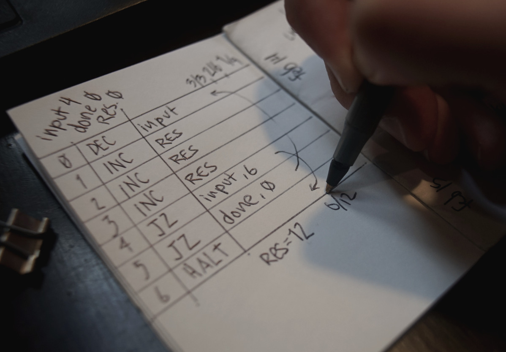

Register Machine Emulator
The pen, representing the program counter, is positioned at the first line of the program. The instruction on that line is processed by modifying the value of a register, or checking if a register is Zero and then moving to the next instruction. The evaluation stops upon reaching a halt or empty instruction.
CLR(r): Set register r to Zero.INC(r): Add 1 to the register r.DEC(r): Subtract 1 from register r.CPY(a, b): Copy the register a in register b.JZ(r, i): If register r is Zero, jump to instruction i.JE(a, b, i): If the registers a and b are equal, jump to instruction i.
The classic paper ISAs are the WDR Computer and CARDIAC.
WDR Instruction Set
The WDR paper computer, or Know-how Computer, is an educational model of a computer consisting only of a pen, a sheet of paper, and individual matches in the most simple case. The instruction set of five commands is small but Turing complete and therefore enough to represent all mathematical functions: incrementing ("inc") or decrementing ("dec") a register, unconditional jump ("jmp"), conditional jump ("skp", skips next instruction if a register is zero), and stopping program execution ("end").
| Opcode | Description |
|---|---|
| END | Aborts the execution of your program, so that you can examine the contents of your data registers. |
| SKP(r) | Checks if the data register r is zero. If it is zero, the program counter is increased by 2, otherwise the program counter is increased only by 1. |
| JMP(z) | Sets the program counter to line number z. |
| INC(r) | Increments the contents of the data register r and increases the program counter by 1. |
| DEC(r) | Decrements the contents of the data register r and increases the program counter by 1. |
The instructions can be encoded as a Rejoice program:
To encode a WDR program into a 8-bits punched card, we could use 3 bits of space to encode the operation, which leaves 5 bits for the value. This computer's programs uses only 5 operations out of a possible 8, leaving 3 unused.
| Binary | Opcode | ||
|---|---|---|---|
| 0 | 0 | 0 | END |
| 0 | 0 | 1 | SKP |
| 0 | 1 | 0 | JMP |
| 0 | 1 | 1 | ADD |
| 1 | 0 | 0 | SUB |
The following program subtracts from R1 and adds to
R0 until the value of R1 is zero. The result of the
addition of R0 and R1 will be stored in
R0.
| Line | Opcode | Value | Opcode | Hex | ||||||
|---|---|---|---|---|---|---|---|---|---|---|
| 00 | 0 | 1 | 0 | 0 | 0 | 0 | 1 | 1 | JMP 03 | $43 |
| 01 | 0 | 1 | 1 | 0 | 0 | 0 | 0 | 0 | ADD R0 | $60 |
| 02 | 1 | 0 | 0 | 0 | 0 | 0 | 0 | 1 | SUB R1 | $82 |
| 03 | 0 | 0 | 1 | 0 | 0 | 0 | 0 | 1 | SKP R1 | $22 |
| 04 | 0 | 1 | 0 | 0 | 0 | 0 | 0 | 1 | JMP 01 | $41 |
| 05 | 0 | 0 | 0 | 0 | 0 | 0 | 0 | 0 | END | $00 |
The binary expression of the operation and value of the previous program can be encoded horizontally as the following punched card:
v v v v v v • • • • • • • • • • •
Ref. 5-bits Table
The following table show the binary table for 32 addressable lines of a program.
| 00 | 00000 | 08 | 01000 | 10 | 100000 | 18 | 11000 |
| 01 | 00001 | 09 | 01001 | 11 | 100001 | 19 | 11001 |
| 02 | 00010 | 0A | 01010 | 12 | 100010 | 1A | 11010 |
| 03 | 00011 | 0B | 01011 | 13 | 100011 | 1B | 11011 |
| 04 | 00000 | 0C | 01100 | 14 | 100000 | 1C | 11100 |
| 05 | 00001 | 0D | 01101 | 15 | 100001 | 1D | 11101 |
| 06 | 00010 | 0E | 01110 | 16 | 100010 | 1E | 11110 |
| 07 | 00011 | 0F | 01111 | 17 | 100011 | 1F | 11111 |
CARDIAC Instruction Set
CARDIAC (CARDboard Illustrative Aid to Computation) is a learning aid developed for Bell Telephone Laboratories in 1968 to teach high school students how computers work. The computer operates in base 10 and has 100 memory cells which can hold signed numbers from 0 to 999. It has an instruction set of 10 instructions which allows CARDIAC to add, subtract, test, shift, input, output and jump.
| Opcode | Instruction | Description |
|---|---|---|
| INP | Input | take a number from the input card and put it in a specified memory cell. |
| CLA | Clear and add | clear the accumulator and add the contents of a memory cell to the accumulator. |
| ADD | Add | add the contents of a memory cell to the accumulator. |
| TAC | Test accumulator contents | performs a sign test on the contents of the accumulator; if minus, jump to a specified memory cell. |
| SFT | Shift | shifts the accumulator x places left, then y places right, where x is the upper address digit and y is the lower. |
| OUT | Output | take a number from the specified memory cell and write it on the output card. |
| STO | Store | copy the contents of the accumulator into a specified memory cell. |
| SUB | Subtract | subtract the contents of a specified memory cell from the accumulator. |
| JMP | Jump | jump to a specified memory cell. The current cell number is written in cell 99. This allows for one level of subroutines by having the return be the instruction at cell 99 (which had '8' hardcoded as the first digit. |
| HRS | Halt and reset | move bug to the specified cell, then stop program execution. |
incoming: paper rewriting uxn devlog